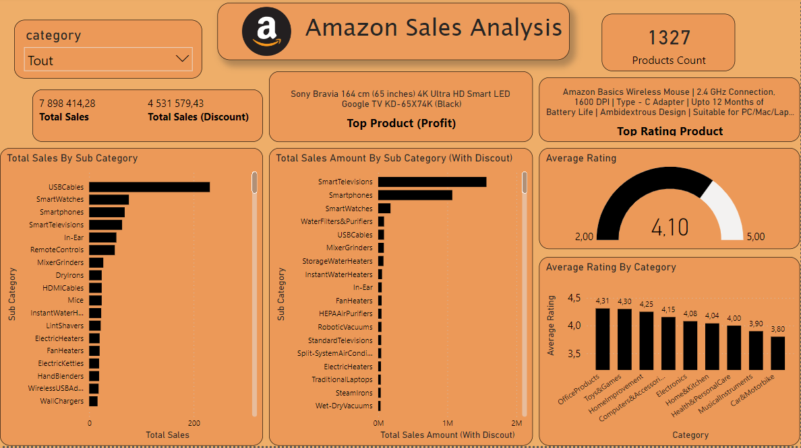

The Sales Analysis Dashboard offers a comprehensive view of key metrics to facilitate informed decision-making, strategy optimization, and overall business performance enhancement.
1. Total Sales:
1.1 Total Sales: Display a key metric showcasing the overall sales performance.
1.2 Total Sales with Discount: Highlight the total sales taking discounts into account for a more accurate revenue representation.
2. Top Product Analysis:
2.1 Top Products by Profit:
Present the products contributing the most to profit.
2.2 Top Products by Rating:
Present the product with the highest customer rating, promoting customer favorite.
3. Average Ratings:
3.1 Overall Average Rating:
Showcase the average rating of all products to understand the general customer satisfaction level.
3.2 Average Ratings by Category:
Break down the average ratings by product categories, helping identify high-performing categories.
4. Sales by Sub-Category:
4.1 Total Sales by Sub-Category:
Illustrate the total sales for each sub-category.
4.2 Total Sales Amount by Sub-Category with Discount:
Visualize the sales amounts, considering discounts, for each sub-category.
5. Insights and Actions:
5.1 Identify Profitable Products:
Provide insights into products that contribute the most to overall profit.
5.2 Optimize Discount Strategies:
Analyze the impact of discounts on sales and identify opportunities to optimize discount strategies.
5.3 Enhance Product Ratings:
Suggest actions to improve ratings for lower-rated products.
Conclusion:
The Sales Analysis Dashboard offers a comprehensive view of sales data, enabling stakeholders to make informed decisions, optimize strategies, and enhance overall business performance.
The HR Dashboard provides a comprehensive view of key metrics related to employee attrition and workforce demographics, enabling HR professionals and decision-makers to monitor, analyze, and make informed decisions.
1. Attrition Metrics:
1.1 Attrition Rate:
- Display the attrition rate as a percentage, calculated as the number of employees who left the company divided by the total workforce.
1.2 Attrition Count:
- Present the total number of employees who have left the company during a specified period.
2. Workforce Demographics:
2.1 Average Age:
- Showcase the average age of employees within the organization.
2.2 Employee Count:
- Display the total number of employees currently in the organization.
2.3 Average Salary:
- Highlight the average salary across all employees.
3. Gender Diversity:
3.1 Female and Male Employee Cards:
- Include separate cards for female and male employees, each displaying the count and percentage of the respective gender in the workforce.
4. Attrition Analysis:
4.1 Attrition Count by Age:
- Visualize the attrition count based on different age groups to identify any age-related patterns.
4.2 Attrition Count by Years at the Company:
- Illustrate the attrition count based on the number of years employees have been with the company, helping identify trends related to tenure.
4.3 Attrition Count by Salary:
- Present the attrition count categorized by salary ranges to understand the impact of compensation on attrition.
4.4 Attrition by Education Levels:
- Display attrition rates based on different education levels, helping identify any correlation between education and attrition.
4.5 Attrition by Job Role:
- Illustrate attrition rates based on different job roles, providing insights into roles with higher attrition.
4.6 Attrition Count by Job Satisfaction:
- Show the attrition count based on levels of job satisfaction to understand the impact of employee satisfaction on attrition.
4.7 Attrition Count by Role:
- Provide a breakdown of attrition count by specific roles or departments within the organization.
Conclusion:
The HR Dashboard aims to empower HR professionals and organizational leaders with actionable insights into attrition patterns, workforce demographics, and factors influencing employee turnover. By regularly monitoring these metrics, the organization can proactively address challenges, improve employee satisfaction, and enhance overall workforce management.